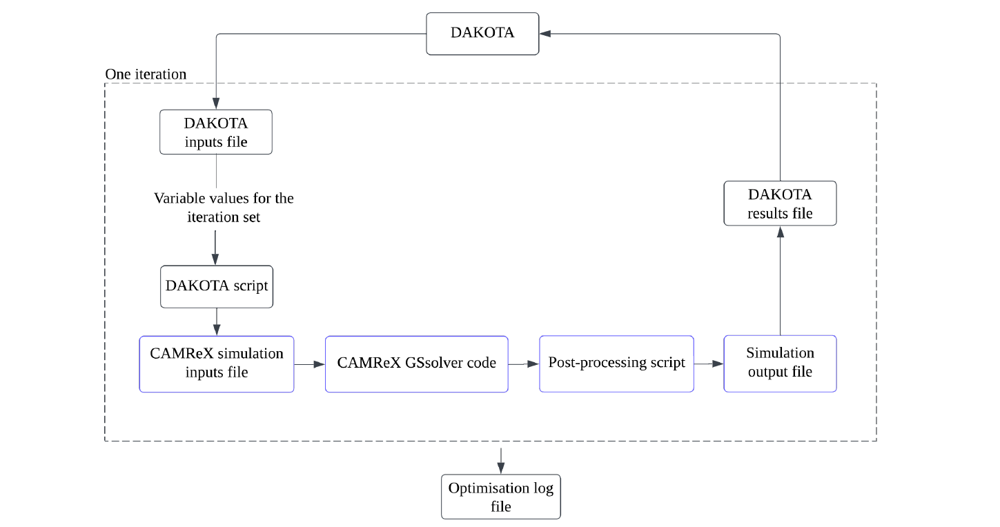
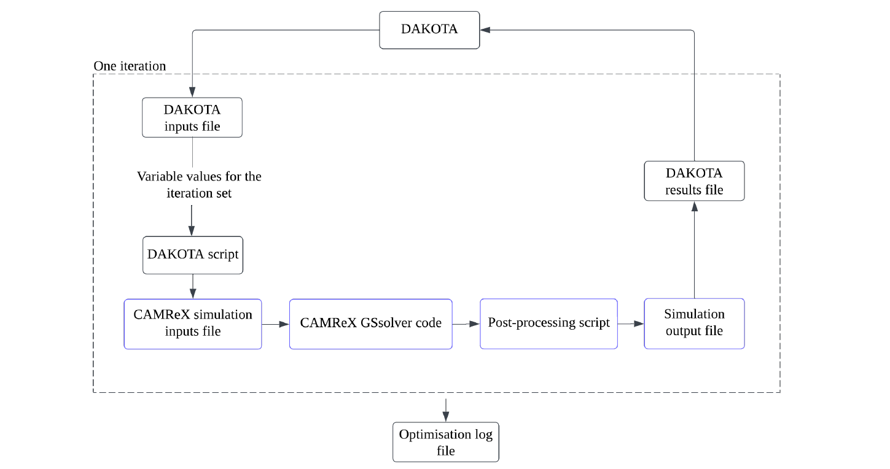

Simulation and optimisation of tokamak plasma
 

Plasma in nuclear fusion reactors suffers from a number of instabilities that have prevented, so far, the long-awaited breakthorough in the filed. Macroscopic computational modelling of fusion plasma involves solving the plasma equilibirum equation, as derived from the magnetohydrodynamics (MHD) governing system of the plasma, and then using this equilibirium solution as initial data for real fusion plasma tests. Optimised equilibirum states then are better positioned to maintain stability in time evolution. This project solves the equilibrium equation, and proceeds with constructing a multi-variable, multi-objective optimisation algorithm where reactor design variables (plasma current, poloidal field coils position) are adjusted to optimise key plasma metrics of stability and efficiency (safety factor q, poloidal beta β).
Source code • Poster